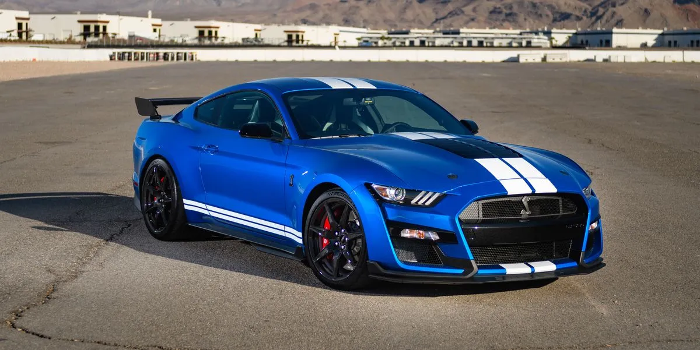

Shelby Cobra Series Website


The vehicle line this website is dedicated to is the Shelby
The vehicle line this website is dedicated to is the Shelby
Cobra series. Shelby Cobras are sports cars, and they are very
well known for their immense speed. The Shelby Cobra series
of vehicles was created in 1962 by Carroll Shelby, an American
automotive designer, racing driver, and entrepreneur and it has
remained in production to this day. The Shelby Cobra GT500
was created in 1967.
-
The first iteration was a remodeled AC Ace.
-
The first ever Shelby Cobra was auctioned for $13.75 million.
-
900 of the 1,000 original Shelby Cobras still remain.
-
It took three tries to make the finished product of the first model.
Shelby Cobra
Fun facts: